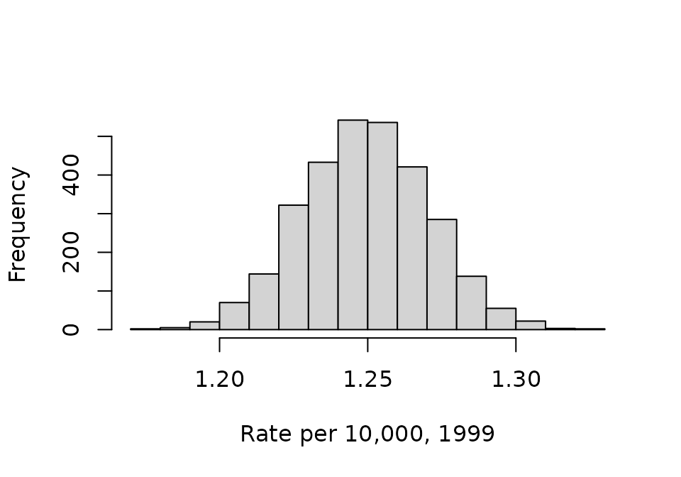
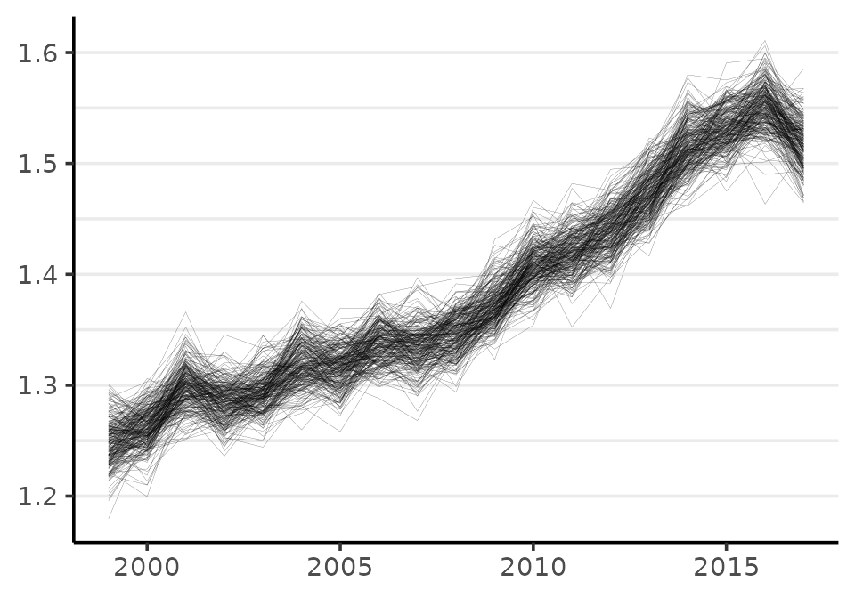

Most users of surveil may not need to know much of anything about MCMC analysis. Many statistical software users do not know how estimates are obtained. However, there are a few topics that are important for surveil will benefit from having some familiarity with.
The following topics will be introduced here:
McElreath (2016) is helpful for learning Bayesian analysis using MCMC. Other books that discuss MCMC include MacKay (2003) and Gelman et al. (2014); some may also want to see Stan Development Team (2022) and Vehtari et al. (2021).
The discussion will make use of a model of U.S. cancer incidence rates, ages 10-14 from the cancer data:
data(cancer)
cancer2 <- subset(cancer, Age == "10-14")
fit <- stan_rw(cancer2, time = Year, iter = 1500, chains = 4, refresh = 0)
#> Distribution: normal
#> Distribution: normal
#> [1] "Setting normal prior(s) for eta_1: "
#> location scale
#> -6 5
#> [1] "\nSetting half-normal prior for sigma: "
#> location scale
#> 0 1The iter argument determines how many MCMC samples will be drawn from the model. The first half of the samples will always be discarded as warmup and the remaining samples will be used for inference. The chains argument determines how many independent MCMC chains will be used. The code above uses iter=1500 and chains=4 which means there will be 3,000 MCMC samples returned for inference.
We can examine the MCMC samples themselves to see how the values provided by the print method were calculated. The stanfit object created by Stan contains all of the MCMC samples:
samples <- fit$samples
class(samples)
#> [1] "stanfit"
#> attr(,"package")
#> [1] "rstan"Each row of the matrix phi is a sample from the joint posterior probability distribution of parameters, and each column represents a parameter. In this case, each parameter is an annual cancer incidence rate. The values in any given column are samples from the marginal probability distribution for that parameter.
We can visualize the samples using histograms. This code first takes the first column from phi, which represents the cancer incidence rate in 1999 (the first observed year); the rates are multiplied by 10,000 for ease of reading:
phi <- 10e3 * phi
phi_1999 <- phi[,1]
head(phi_1999)
#> [1] 1.225336 1.251036 1.232780 1.275318 1.230786 1.273219
hist(phi_1999, xlab = "Rate per 10,000, 1999", main = NA)
These distributions are typically summarized by calculating their mean and tail-area quantiles. The mean is taken as the parameter estimate and the tail-area quantiles provide a credible interval:
mean(phi_1999)
#> [1] 1.249454If we repeated these steps for all years (for each column in phi) we would obtain the same information that was provided by print(fit).
In order to make inferences about quantities that involve more than one parameter, we need to use samples from the joint probability distribution. We can visualize the joint distribution using the plot method:
plot(fit, style = "lines", scale = 10e3)
#> Plotted rates are per 10,000
Each line is a visual depiction of a row from the matrix of MCMC samples phi.
When calculating quantities of interest, like annual percent change, cumulative change, or a measure of inequality, one must always use the joint distribution. This means that the quantity of interest needs to be calculated by working row-wise. To illustrate how this is done, the following code creates a new quantity: the difference between risk in 2017 (the \(19^{th}\) year) and 1999 (the first observed year):
phi_2017 <- phi[,19]
diff <- (phi_2017 - phi_1999)
hist(diff, xlab = "Rate difference", main = NA)The mean of the probability distribution for the change in the incidence rate per 10,000 from 1999 to 2017 is:
mean(diff)
#> [1] 0.2694629Cancer incidence increased by 0.26 per 10,000 from 1999 to 2017 for kids ages 10-14. The cumulative percent change from 1999 to 2017 can also be calculated this way:
100 * mean( diff / phi_1999 )
#> [1] 21.60027The rate increase is a cumulative change of about 21% or about 1.2% annually.
An important difference between sampling with an MCMC algorithm and sampling from a pseudo random number generator (like rnorm) is that MCMC produces samples that are (often) correlated with one another. This means that in the process of drawing MCMC samples each sample tends to be similar to the previous sample.
This means that for any number of MCMC samples, there is less information than would be provided by the same number of independently drawn samples. As a result, it often requires more MCMC samples to obtain an estimate of any given prevision.
Stan Development Team (2022) write:
Roughly speaking, the effective sample size (ESS) of a quantity of interest captures how many independent draws contain the same amount of information as the dependent sample obtained by the MCMC algorithm. The higher the ESS the better… For final results, we recommend requiring that the bulk-ESS is greater than 100 times the number of chains. For example, when running four chains, this corresponds to having a rank-normalized effective sample size of at least 400.
To examine the effective sample size (ESS), you can start by printing the fit$samples object. The ESS is reported in the column labeled n_eff:
print(samples)
#> Inference for Stan model: RW.
#> 4 chains, each with iter=1500; warmup=750; thin=1;
#> post-warmup draws per chain=750, total post-warmup draws=3000.
#>
#> mean se_mean sd 2.5% 25% 50% 75% 97.5% n_eff Rhat
#> rate[1,1] 0.00 0.00 0.00 0.00 0.00 0.00 0.00 0.00 2643 1
#> rate[1,2] 0.00 0.00 0.00 0.00 0.00 0.00 0.00 0.00 3030 1
#> rate[1,3] 0.00 0.00 0.00 0.00 0.00 0.00 0.00 0.00 2720 1
#> rate[1,4] 0.00 0.00 0.00 0.00 0.00 0.00 0.00 0.00 2931 1
#> rate[1,5] 0.00 0.00 0.00 0.00 0.00 0.00 0.00 0.00 3219 1
#> rate[1,6] 0.00 0.00 0.00 0.00 0.00 0.00 0.00 0.00 3164 1
#> rate[1,7] 0.00 0.00 0.00 0.00 0.00 0.00 0.00 0.00 3732 1
#> rate[1,8] 0.00 0.00 0.00 0.00 0.00 0.00 0.00 0.00 4165 1
#> rate[1,9] 0.00 0.00 0.00 0.00 0.00 0.00 0.00 0.00 3829 1
#> rate[1,10] 0.00 0.00 0.00 0.00 0.00 0.00 0.00 0.00 3450 1
#> rate[1,11] 0.00 0.00 0.00 0.00 0.00 0.00 0.00 0.00 3953 1
#> rate[1,12] 0.00 0.00 0.00 0.00 0.00 0.00 0.00 0.00 3346 1
#> rate[1,13] 0.00 0.00 0.00 0.00 0.00 0.00 0.00 0.00 3081 1
#> rate[1,14] 0.00 0.00 0.00 0.00 0.00 0.00 0.00 0.00 3697 1
#> rate[1,15] 0.00 0.00 0.00 0.00 0.00 0.00 0.00 0.00 3641 1
#> rate[1,16] 0.00 0.00 0.00 0.00 0.00 0.00 0.00 0.00 3348 1
#> rate[1,17] 0.00 0.00 0.00 0.00 0.00 0.00 0.00 0.00 3408 1
#> rate[1,18] 0.00 0.00 0.00 0.00 0.00 0.00 0.00 0.00 2329 1
#> rate[1,19] 0.00 0.00 0.00 0.00 0.00 0.00 0.00 0.00 3213 1
#> sigma[1] 0.03 0.00 0.01 0.02 0.02 0.02 0.03 0.04 716 1
#> log_lik[1,1] -5.25 0.01 0.59 -6.90 -5.39 -5.02 -4.87 -4.82 1802 1
#> log_lik[1,2] -5.24 0.01 0.50 -6.67 -5.41 -5.05 -4.89 -4.84 2484 1
#> log_lik[1,3] -5.89 0.02 1.02 -8.50 -6.35 -5.59 -5.12 -4.88 2432 1
#> log_lik[1,4] -5.24 0.01 0.50 -6.62 -5.38 -5.05 -4.91 -4.87 2125 1
#> log_lik[1,5] -5.26 0.01 0.50 -6.74 -5.41 -5.06 -4.92 -4.88 1811 1
#> log_lik[1,6] -5.45 0.01 0.67 -7.26 -5.66 -5.22 -4.99 -4.90 2400 1
#> log_lik[1,7] -5.31 0.01 0.57 -6.92 -5.46 -5.10 -4.94 -4.88 2140 1
#> log_lik[1,8] -5.28 0.01 0.52 -6.73 -5.42 -5.09 -4.94 -4.90 2252 1
#> log_lik[1,9] -5.21 0.01 0.48 -6.60 -5.30 -5.03 -4.92 -4.88 1697 1
#> log_lik[1,10] -5.19 0.01 0.42 -6.38 -5.31 -5.04 -4.91 -4.88 1773 1
#> log_lik[1,11] -5.19 0.01 0.42 -6.45 -5.28 -5.02 -4.92 -4.89 1518 1
#> log_lik[1,12] -5.31 0.01 0.54 -6.81 -5.44 -5.10 -4.95 -4.91 2101 1
#> log_lik[1,13] -5.22 0.01 0.44 -6.41 -5.31 -5.07 -4.95 -4.91 1779 1
#> log_lik[1,14] -5.22 0.01 0.44 -6.46 -5.31 -5.06 -4.95 -4.92 1462 1
#> log_lik[1,15] -5.24 0.01 0.43 -6.45 -5.34 -5.07 -4.96 -4.93 1329 1
#> log_lik[1,16] -5.42 0.01 0.62 -7.23 -5.61 -5.20 -5.00 -4.95 1983 1
#> log_lik[1,17] -5.23 0.01 0.41 -6.39 -5.34 -5.07 -4.98 -4.95 1742 1
#> log_lik[1,18] -5.78 0.02 0.89 -8.04 -6.13 -5.50 -5.12 -4.97 2377 1
#> log_lik[1,19] -5.49 0.02 0.74 -7.58 -5.69 -5.22 -5.00 -4.94 1837 1
#> lp__ -25.71 0.15 3.85 -34.25 -27.93 -25.37 -23.02 -19.08 688 1
#>
#> Samples were drawn using NUTS(diag_e) at Sun Jul 7 20:55:51 2024.
#> For each parameter, n_eff is a crude measure of effective sample size,
#> and Rhat is the potential scale reduction factor on split chains (at
#> convergence, Rhat=1).All of the rate parameters have ESS over 2,000 which is much more than adequate for inference.
The rate parameters are most important, since inference is almost always focused on them. sigma is the scale parameter for the model; the log_lik parameters are the log-likelihood of each observation. The lp__ parameter is always generated by Stan, it is the log-probability of the model.
If Stan is warning that Bulk ESS or tail area ESS is low and possibly unreliable, the first thing you can do is print results and inspect the ESS values. Depending on one’s purpose, the warning may be overly cautious. Otherwise you can simply increase the number of samples drawn using the iter argument to stan_rw.
A second important difference between sampling with MCMC and sampling with functions like rnorm is that with MCMC we have to find the target distribution. The reason rstan (and surveil) samples from multiple, independent MCMC chains by default is that this allows us to check that they have all converged on the same distribution. If one or more chains does not resemble the others then there may be a convergence failure (Gelman et al. 2014). When chains have converged, the Rhat statistics will all equal about 1.
Stan Development Team (2022) write:
We recommend running at least four chains by default and in general only fully trust the sample if R-hat is less than 1.01.
The default setting in surveil uses four MCMC chains, consistent with the above recommendation.
The Rhat statistic can be examined by printing the Stanfit object print(fit$samples). We can see above that they are all equal to about 1.00.
We could also visualize the Rhats all at once using rstan::stan_rhat:
# plot not shown
rstan::stan_rhat(samples)Sometimes, MCMC algorithms are unable to provide unbiased samples that will converge on the target distribution given sufficient time. Stan’s MCMC algorithm will issue a warning when it encounters a region of the probability model that it seems unable to explore. These warnings of “divergent transitions” should not be ignored, as they indicate that something may have gone wrong (Betancourt 2017a, 2017b). They will be printed to the console just after the model finishes sampling. Note that other MCMC platforms are simply unable to identify this bias (they will not issue a warning like Stan’s divergent transitions, even if the problem is present).
If the number of divergent transitions is small (such as a handful out of 5,000 samples), and the ESS and Rhat are both looking good, then you may determine that the amount of bias potentially introduced is acceptable for your purposes.
If there is a large number of divergent transitions, this is a serious warning. You may have made a mistake with your input data, or it could be that the model is just not very appropriate for the data.
If you receive a divergent transition warning from a surveil model, here are some things to consider:
Draw more samples: if you also have low ESS, the divergent transitions may disappear by increasing the number of iterations (lengthening Stan’s adaptation or warm-up period). However, the default value of iter = 3000 should generally be sufficient.
Raise adapt_delta: you can also control a tuning parameter related to divergent transitions. Simply raising the adapt_delta value to, say, 0.99 or 0.999 if need be, may be sufficient; e.g., stan_rw(data, time = Year, control = list(adapt_delta = 0.99, max_treedepth = 13)). (When raising adapt_delta, raising max_treedepth may improve sampling speed.) Raising adapt_delta ever closer to 1 (e.g., to .9999) is generally not helpful.
There may be times when you are not able to prevent divergent transitions. This may occur when the population at risk is small and observations are particularly noisy; introducing the covariance structure (using core = TRUE) may make these issues more difficult to address. If you are working with multiple age groups, it may be the case that the age groups with very low case counts are the only source of the problem. To determine if that is the case, you can run the model without that age group or run a model for only that age group.
Betancourt, Michael. 2017a. “A Conceptual Introduction to Hamiltonian Monte Carlo.” arXiv Preprint arXiv:1701.02434.
———. 2017b. “Diagnosing Biased Inference with Divergences.” Stan Case Studies 4. https://mc-stan.org/users/documentation/case-studies/divergences_and_bias.html.
Donegan, Connor, Amy E. Hughes, and Simon J. Craddock Lee. 2022. “Colorectal Cancer Incidence, Inequality, and Prevention Priorities in Urban Texas: Surveillance Study with the ‘Surveil’ Software Pakcage.” JMIR Public Health & Surveillance 8 (8): e34589. https://doi.org/10.2196/34589.
Gelman, Andrew, John B Carlin, Hal S Stern, David B Dunson, Aki Vehtari, and Donald B Rubin. 2014. Bayesian Data Analysis. Third. CRC Press.
MacKay, David M. 2003. Information Theory, Inference, and Learning Algorithms. Cambridge University Press.
McElreath, Richard. 2016. Statistical Rethinking: A Bayesian Course with Examples in R and Stan. CRC Press.
Stan Development Team. 2022. “Runtime Warnings and Convergence Problems.” https://mc-stan.org/misc/warnings.html#bfmi-low.
Vehtari, Aki, Andrew Gelman, Daniel Simpson, Bob Carpenter, and Paul-Christian Bürkner. 2021. “Rank-Normalization, Folding, and Localization: An Improved R for Assessing Convergence of MCMC (with Discussion).” Bayesian Analysis 16 (2): 667–718.